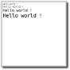 glut-fontcc
Direct font rendering with minimal dependencies.
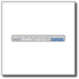 glut-textcc
Fancy text rendering with ansi code parsing.
Handles underline, bold,foreground color, and background color.
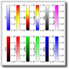 glut-colorbarscc
Show all available default colorbars.
You can of course create your own.
glut-imagecc
Image rending using the texture object.
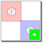 glut-scenecc
Show how one can include a scene object within another scene.
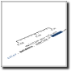 glut-axiscc
Graduated axis.
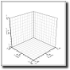 glut-framecc
Reference frame.
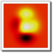 glut-texturecc
Basic texture rendering of a function of type z=f(x,y).
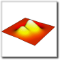 glut-surfacecc
Rendering of a function of type z=f(x,y) as an elevation surface.
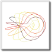 glut-linecc
Rendering of a set of points using a line (or a tube depending on settings).
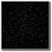 glut-cloudcc
Rendering of a set of points using points (or spheres depending on settings).
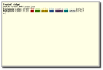 glut-terminalcc
Interactive terminal
User can enter command and a callback is called at each command.
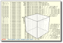 glut-bashcc
Bash emulation.
This is an almost "normal" bash shell without job control.
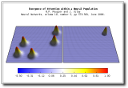 glut-cnftcc
Continuum Neural Field Theory
This is an illustration of how one can use the toolking for scientific visualization.